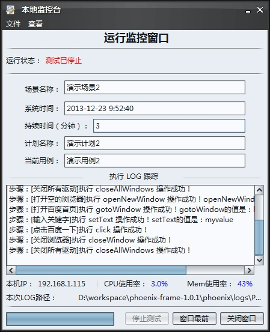

使用本地机器执行过程中，通过该模块可以实时监控执行进展。可监控的项目有：驱动程序状态、已持续时间、当前场景名称、当前计划名称、当前用例名称、当前用例的执行LOG、当前的CPU、Mem内存阀值、进度条实时打印跟踪进展。该界面可进行的操作有：停止场景的执行、将当前操作窗口最前显示、取消界面最前显示、导出正在执行的LOG信息。为了控制内存的使用，在执行过程中该界面只能开启一个。下面讲解一下关键点的使用方法：
第一步：配置CPU、内存阀值
该功能允许您实时监控每个操作单元执行时对本机CPU、内存使用，配置方法为：在系统的根目录下找到phoenix文件夹 ，找到config文件夹，找到phoenix.properties配置文件，然后找到CPULimit、和MemoryLimit关键字，配置您可接受的阀值。如CPU=50%，即执行过程中CPU阀值不能超过50%，如果超过了此阀值，则会在LOG中打印相关信息。另外如果想关闭阀值LOG打印功能，只需将配置文件CMFlag的值设置为NO，即CMFlag=NO，默认此开关是关闭的。效果为：在执行过程中如果超过了阀值，只会在界面“CPU使用率”、“Mem使用率”数字区以红色醒目字体显示，但不会将信息写入LOG中。如我将CPU阀值配置为3%时的截图：
第二步：本地监控界面功能说明
在场景执行过程中，通过工具菜单的打开监控项可以启动本地监控功能，或者直接点击界面上的 图标来启动本地监控。界面上展示的信息采用”生产者-消费者“模式，通过界面可以直观的看到当前执行的属于哪个场景、哪个计划、哪个用例、总共执行了多长时间以及LOG等。如图：

该界面在场景启动前后都可以启动，且关闭后不影响执行过程。再次启动时可继续进行监控。如果场景未执行前启动，则”停止测试“按钮是不可用的，待场景启动后，将会转变为可用状态。
第三步：导出用例LOG
导出的LOG默认保存到系统根目录下phoenix文件夹下的logs文件夹中，名称为当前用例的名称。重复导出将会覆盖前一次导出的数据。该LOG信息独立于phoenix.log，但phoenix.log包含此LOG的数据。
第四步：关闭监控窗口
至此，本地监控界面就讲解完毕了，如果您有好的建议或意见，请到 心得交流区 留言，我会认真对待您给出的宝贵意见。